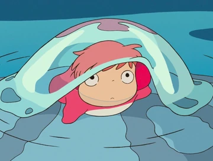

Ponyo is a movie about a son of a sailor, a 5-year old boy named Sosuke. He lives his life quite by the oceanside with his mother mostly. One day, Sosuke finds an adorable goldfish stuck in a glass bottle. He breaks the bottle to break out the fish but then the ocean behaves differently. The goldfish is Ponyo, daughter of a masterful wizard and a sea goddess. Ponyo uses her fathers magic to transform herself into a human. She quickly falls in love with Sosuke and life on land, and so does Sosuke. In this movie you will follow Ponyo, Sosuke and all the magic that can turn a village upside down. Watching Ponyo is an emotional rollercoaster. Happiness, sadness, fear, empathy. Though it is still a great movie for families, cozy weekends or partners.